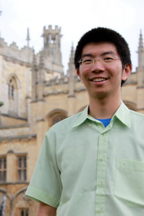

Chinawat (Chin) Isradisaikul, Ph.D.
ชินวัตร อิศราดิสัยกุล
Thai Scholars 47
E-mail: chinawat@cs.cornell.edu
Links:
Teaching |
CV |
Airports |
Profile Pictures
About Me
I have recently graduated from the Department of Computer Science, Cornell University.
Andrew C. Myers was my advisor.
I am part of Thai Scholars 47, the group of Thai students who won the Royal Thai Government's scholarships in 2004 to study abroad at the undergraduate level.
The first place we spent our lives here in the States was Brewster Academy in Wolfeboro, New Hampshire.
Until 2010, I went back to Wolfeboro every summer to help run the Thai Scholar Orientation Program, the program I was a student in 2004, as a Thai TA.
Until 2014, every winter I went to Stony Point Center, a conference center in Rockland County just west of the Hudson, to help each class of new Thai Scholars finish their college applications.
About the Photo
Date taken: June 14, 2014
Place: Christ Church, Oxford, United Kingdom
Description: This was my first time in the UK. A train ride from Edinburgh, where PLDI 2014 conference took place, brought me to Oxford to visit a long-time friend since my undergraduate career. A perk of having friends studying at Oxford is that I can enter places such as Christ Church for free. This entire journey featured four cancelled flights and a missed train connection, but it was a happy ending.
Research Interests
Building software correctly is hard.
Programming language design that introduces new language features and increases expressiveness can prevent bugs, but new language features require new compilers.
Without good support for extending existing compilers, new language features face an obstacle from being used in practice.
I work on design patterns that enable extensibility in a compiler framework implemented in popular languages such as Java.
Implemented correctly, these design patterns can go even further so that independently developed language features can be composed into a new programming language at almost no costs.
I have also worked on program verification and programming language design itself.
Publications
- Chinawat Isradisaikul and Andrew C. Myers. Finding Counterexamples from Parsing Conflicts. In Proceedings of the 36th ACM SIGPLAN conference on Programming Language Design and Implementation (PLDI), pp 555-564, 2015.
[PDF |
Slides |
Software |
BibTeX |
DOI]
- Chinawat Isradisaikul and Andrew C. Myers. Reconciling Exhaustive Pattern Matching with Objects. In Proceedings of the 34th ACM SIGPLAN conference on Programming Language Design and Implementation (PLDI), pp. 343-354, 2013. Distinguished Paper Award
[PDF |
Slides |
Technical Report |
BibTeX |
DOI]
My Erdös number is at most 4.
(Chin Isradisaikul
← Andrew C. Myers
← Dexter Kozen
← Andreas Blass
← Paul Erdös)
Other Interests
- Trains: I have been in touch, in rides, and in love with trains since my childhood. I have been in the front cab of several trains, looking ahead to the track in front. Now I rarely have a chance to do that anymore because I have grown up. Nonetheless, I still love riding trains, whether it be the State Railway of Thailand or Amtrak. In fact, any rail transportations catch my attention:
Boston T,
DC Metro,
SEPTA,
BART,
CalTrain,
NJ Transit,
NYC Subway,
VTA Light Rail,
SoundTransit Link light rail,
TriMet MAX Light Rail,
UTA FrontRunner & Trax,
EWR AirTrain,
San Francisco Cable Car--Muni, SFO AirTrain, ORD Monorail, PIT People Mover. My interest is about signaling and scheduling.
- Planes: I need to admit that I was afraid of flying until I came to the States. My first flight was too short, and I felt nauseous! But it got better. Now, I still fly as necessary, but I became interested in listening to the communication between the FAA and captains on a United flight. Try it on Channel 9. You know your plane is gonna turn before it really does! You know where you are in the sky! You know how high you are from the sea level!
- Directions: I have a weird habit of remembering directions of where I go. I have a pretty good sense of directions (better between sunrise and sunset, best with a map).

Updated: 11/14/2017